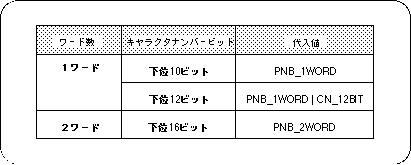
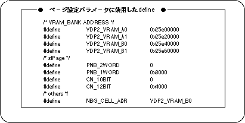

Return to previous page | Return to menu | Go to next page
A page is a character pattern spread in a square of 64 x 64 cells. The actual data format is the pattern name data of each character pattern, which is stored in memory continuously as a table for 64 x 64 cells, which is called the pattern name data table.
The pattern name table created in the page setup is passed to a higher plane or map and rearranged.

To set the page in SGL, use the library functions “slPageNbg0 to 3” and “slPageRbg0” according to each scroll screen.

Note) The values in the above table are defined in “sl_def.h” included with the system.
The following figure shows an example of actual page settings and a list of #defines used for page setting parameters.

Note) These #defines are defined in “sl_def.h”.